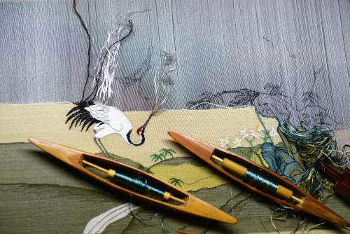
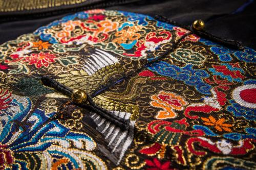
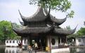
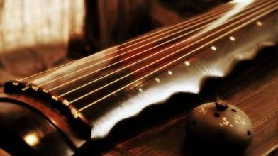

江苏部分非物质文化遗产
-

缂丝
又称“刻丝”，是中国传统丝绸艺术品中的精华。是中国丝织业中最传统的一种挑经显纬，极具欣赏装饰性丝织品。宋元以来一直是皇家御用织物之一，常用以织造帝后服饰、御真（御容像）和摹缂名人书画。因织造过程极其细致，摹缂常胜于原作，而存世精品又极为稀少，是当今织绣收藏、拍卖的亮点。常有“一寸缂丝一寸金”和“织中之圣”的盛名。 -

宋锦
是中国传统的丝制工艺品之一。因其主要产地在苏州，故又称“苏州宋锦”。宋锦色泽华丽，图案精致，质地坚柔，被赋予中国“锦绣之冠”，它与南京云锦、四川蜀锦、广西壮锦一起，被誉为我国的四大名锦。宋锦开始于宋代末年（约公元11世纪），产品分重锦和细锦(此两类又合称大锦)、及匣锦、小锦。重锦质地厚重，产品主要用于宫殿、堂室内的陈设。细锦是宋锦中最具代表性的一类，厚薄适中，广泛用于服饰、装裱。 -

苏州香山帮
苏州香山位于太湖之滨，自古出建筑工匠，擅长复杂精细的中国传统建筑技术，人称“香山帮匠人”，史书曾有“江南木工巧匠皆出于香山”的记载。 -

古琴
古琴，亦称瑶琴、玉琴、七弦琴，古代称为琴，近代为区分琴与西方乐器中的琴，因此添加“古”字，称之为古琴。古琴是中国最古老的传统弹拨乐器，是中华文化中的瑰宝，是人类口头和非物质遗产代表作。 -
中国昆曲
中国昆曲，因其历史之悠久，艺术之精妙，体系之完备，及其对后起剧种之影响，在中国戏剧文化史上，占有很高的地位。中国昆曲是中国古典戏剧的杰出代表，其艺术成就与文化价值超越了国界和民族，已成为全人类所认识和选赏。